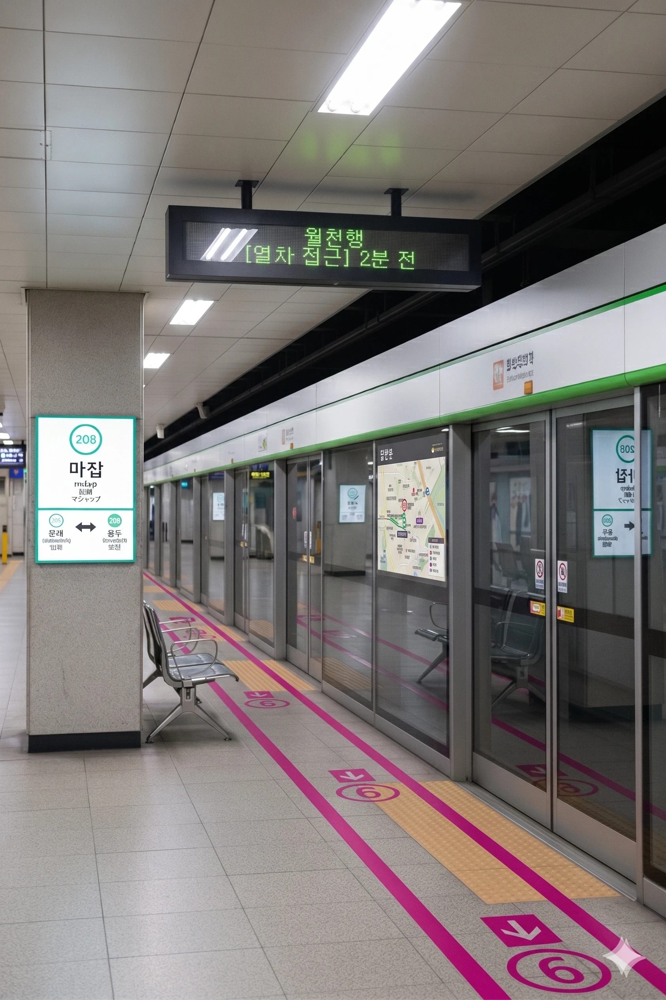
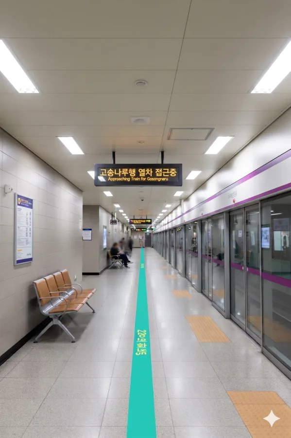

효빈 도시철도 2호선 208번 및 효빈 도시철도 6호선 601번. 효빈광역시 청엽구 마잡동 3 소재이다.
효빈시 청엽구의 주요 환승역으로, 2호선과 6호선이 만나는 지점이다. 1989년 2호선 개통 이후 오랫동안 단일 역으로 운영되다가, 2016년 6호선이 개통되면서 환승역이 되었다.
|
2
6
마잡역 출구 정보
|
||
|---|---|---|
| 번호 | 주요 시설 및 방향 | 비고 |
| 1 | 마잡중, 이마트 마잡점 | |
| 2 | 마잡차량기지 | |
| 3 | 마잡2동행정복지센터 | |
| 4 | 서북초등학교 | |
| 5 | 마잡2동행정복지센터 | |
| 6 | 색수초등학교 | |
※ 2면 2선 상대식 승강장

| 헌이송 ↑ | |||
| 하행 (내선) | ㅣ | ㅣ | 상행 (외선) |
| ↓ 동곡 | |||
| 상행 (외선) | 2 효빈 도시철도 2호선 (완행/급행) | 북효빈역 · 시청 · 고송교차로 · 중앙로 방면 (출근 급행 다음 역: 헌이송 / 평시 급행 다음 역: 등동) |
| 하행 (내선) | 2 효빈 도시철도 2호선 (완행/급행) | 동곡 · 우전 · 당가 · 신흥 방면 (급행 정차 - 다음 역: 동곡) |
※ 2면 2선 상대식 승강장

| 당역 종착 | |||
| 하행 | ㅣ | ㅣ | 상행 |
| ↓ 비동 | |||
| 상행 | 6 효빈 도시철도 6호선 | 당역 종착 |
| 하행 | 6 효빈 도시철도 6호선 | 비동 · 중수 · 고송교차로 · 고송나루 방면 |
| 마잡역 이용객 통계 | ||||
|---|---|---|---|---|
| 연도 | 2호선 | 6호선 | 총합 | 비고 |
| 2020년 | 21,124명 | 11,340명 | 32,464명 | |
| 2021년 | 21,778명 | 11,455명 | 33,233명 | |
| 2022년 | 25,324명 | 13,802명 | 39,126명 | |
| 2023년 | 25,769명 | 14,045명 | 39,814명 | |
| 2024년 | 26,221명 | 14,292명 | 40,513명 | |